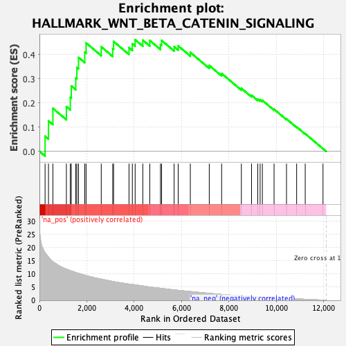
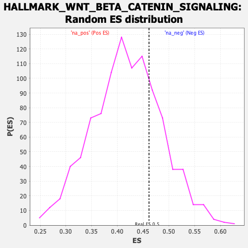

| | | Dataset | gsea_input_PROTECTED |
| Phenotype | NoPhenotypeAvailable |
| Upregulated in class | na_pos |
| GeneSet | HALLMARK_WNT_BETA_CATENIN_SIGNALING |
| Enrichment Score (ES) | 0.4614014 |
| Normalized Enrichment Score (NES) | 1.1033657 |
| Nominal p-value | 0.263 |
| FDR q-value | 0.7047687 |
| FWER p-Value | 0.999 |
Table: GSEA Results Summary

Fig 1: Enrichment plot: HALLMARK_WNT_BETA_CATENIN_SIGNALING
Profile of the Running ES Score & Positions of GeneSet Members on the Rank Ordered List
| SYMBOL | RANK IN GENE LIST | RANK METRIC SCORE | RUNNING ES | CORE ENRICHMENT | | 1 | TP53 | 238 | 17.890 | 0.0626 | Yes |
| 2 | MAML1 | 382 | 16.356 | 0.1260 | Yes |
| 3 | NCOR2 | 568 | 14.572 | 0.1777 | Yes |
| 4 | HDAC2 | 1138 | 11.778 | 0.1847 | Yes |
| 5 | PPARD | 1303 | 11.229 | 0.2228 | Yes |
| 6 | PTCH1 | 1345 | 11.102 | 0.2705 | Yes |
| 7 | FZD8 | 1534 | 10.495 | 0.3032 | Yes |
| 8 | CSNK1E | 1581 | 10.355 | 0.3470 | Yes |
| 9 | NUMB | 1650 | 10.205 | 0.3883 | Yes |
| 10 | NCSTN | 1914 | 9.446 | 0.4100 | Yes |
| 11 | CTNNB1 | 1970 | 9.319 | 0.4483 | Yes |
| 12 | FRAT1 | 2610 | 8.010 | 0.4322 | Yes |
| 13 | GNAI1 | 3096 | 7.103 | 0.4247 | Yes |
| 14 | NOTCH1 | 3131 | 7.044 | 0.4543 | Yes |
| 15 | JAG2 | 3783 | 6.126 | 0.4286 | Yes |
| 16 | DVL2 | 3924 | 5.954 | 0.4444 | Yes |
| 17 | KAT2A | 4042 | 5.809 | 0.4614 | Yes |
| 18 | DLL1 | 4366 | 5.412 | 0.4595 | No |
| 19 | SKP2 | 4660 | 5.014 | 0.4583 | No |
| 20 | MYC | 5112 | 4.519 | 0.4418 | No |
| 21 | AXIN2 | 5160 | 4.468 | 0.4584 | No |
| 22 | JAG1 | 5689 | 3.934 | 0.4328 | No |
| 23 | NKD1 | 5861 | 3.779 | 0.4360 | No |
| 24 | ADAM17 | 6373 | 3.315 | 0.4089 | No |
| 25 | HDAC11 | 7173 | 2.619 | 0.3548 | No |
| 26 | RBPJ | 7695 | 2.221 | 0.3219 | No |
| 27 | LEF1 | 8529 | 1.691 | 0.2607 | No |
| 28 | NOTCH4 | 8959 | 1.428 | 0.2317 | No |
| 29 | HDAC5 | 9221 | 1.277 | 0.2160 | No |
| 30 | CUL1 | 9321 | 1.211 | 0.2133 | No |
| 31 | AXIN1 | 9416 | 1.158 | 0.2109 | No |
| 32 | WNT5B | 9910 | 0.912 | 0.1742 | No |
| 33 | TCF7 | 10435 | 0.694 | 0.1340 | No |
| 34 | CCND2 | 10863 | 0.524 | 0.1011 | No |
| 35 | FZD1 | 11226 | 0.371 | 0.0728 | No |
| 36 | PSEN2 | 11977 | 0.053 | 0.0109 | No |
Table: GSEA details [plain text format]

Fig 2: HALLMARK_WNT_BETA_CATENIN_SIGNALING: Random ES distribution
Gene set null distribution of ES for HALLMARK_WNT_BETA_CATENIN_SIGNALING